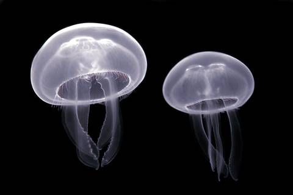
Мелкие медузы и аурелии
⚠ жжение и сыпь
Где: Обычное дело на Джомтьене и у Ко Лана, особенно в конце сезона дождей
Как избежать: Смотреть на воду; не трогать медуз на песке; Нине — лайкра с длинными рукавами
Серьёзно — сначала скорая 1669, потом звонок в страховую. Не срочно — сначала страховая: скажут, в какую клинику ехать. Подробно про страховку.
Вывести из воды. Не тереть, не мыть пресной водой, без льда. Полить уксусом минимум 30 секунд, щупальца снять пинцетом или краем карты. Боль в груди, одышка, спутанность — 1669.
Опустить место укола в горячую воду 40–45 °C на 30–90 минут (температуру проверять своей рукой!). Видимые шипы удалить, глубоко не ковырять. Потом — к врачу.
Ребёнка успокоить и держать неподвижно, конечность — как при переломе, снять кольца. Без жгута, без надрезов, без отсасывания, без льда. Сфотографировать змею издалека. Сразу 1669 или в больницу.
Промывать водой с мылом 15 минут, потом антисептик. В тот же день — в больницу за прививкой от бешенства (схема 0-3-7-14 дней, продолжить дома).
Высокая температура 2–7 дней, вялость, рвота, сыпь. Только парацетамол — ибупрофен и аспирин нельзя. Много пить, сдать анализ (NS1). Опасный период — 3–5 день, когда температура спадает.
Промыть, холод, парацетамол. Нину показать врачу. Отёк лица или трудно дышать — 1669.
Лучшая частная больница, детский центр 24/7, детская реанимация. ≈ 20–25 км, 30–45 мин. Горячая линия 1719
Крупный военно-морской госпиталь в Саттахипе, ≈ 20 км к югу
| 1669 | скорая (бесплатно) |
| 1155 | туристическая полиция, по-английски |
| 1337 | мэрия Паттайи: змеи, медузы |
| 191 | полиция |
| 199 | пожарные |
| 095-146-4221 | пожарные Джомтьена — вызов на змей |
| По-русски | Показать / сказать |
|---|---|
| У меня медицинская страховка | I have travel medical insurance |
| Пожалуйста, свяжитесь с моей страховой | Please contact my insurance company |
| Нужно гарантийное письмо | We need a guarantee of payment letter |
| Дайте, пожалуйста, медицинское заключение и счёт | Please give me the medical report and itemized invoice |
| Нужен детский врач | We need a pediatrician |
При укусе змеи или ожоге кубомедузы — в ближайшую больницу или 1669, а не в «лучшую».
Сводка по Pattaya Mail, Bangkok Post, TAT и рекомендациям ВОЗ. Главные реальные риски — медузы, бездомные собаки (бешенство), обезьяны и комары (денге); остальное встречается редко.

⚠ жжение и сыпь
Где: Обычное дело на Джомтьене и у Ко Лана, особенно в конце сезона дождей
Как избежать: Смотреть на воду; не трогать медуз на песке; Нине — лайкра с длинными рукавами
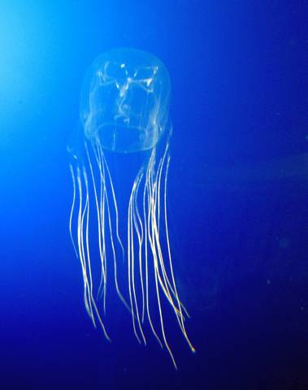
⚠ очень опасна, но встреча маловероятна
Где: В Паттайе очень редко — её нет в официальном списке мест, где она встречается (это Самуи, Пханган, Хуахин, Пхукет)
Как избежать: Не купаться после шторма и в мутной воде; уксус с собой на пляж
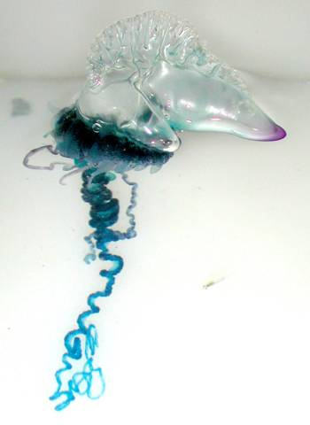
⚠ очень сильная боль
Где: Местных случаев не найдено
Как избежать: Синие «пузыри» на песке не трогать
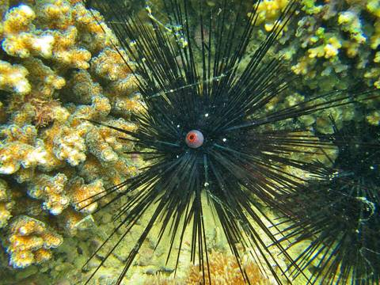
⚠ иглы в стопе
Где: На камнях и рифах Ко Лана, Пратамнака, Саттахипа
Как избежать: Обувь для воды; не ходить по камням, плавать над песком
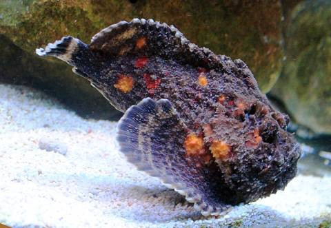
⚠ сильнейшая боль
Где: На рифах Ко Лана и Саттахипа, на песчаных пляжах редко
Как избежать: Обувь для воды, на рифе не вставать
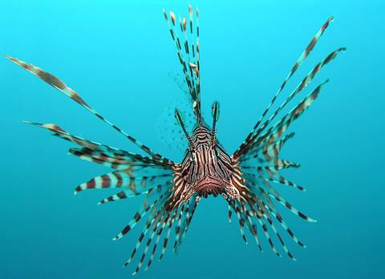
⚠ сильная боль
Где: На рифах; красивая — дети тянутся потрогать
Как избежать: Ничего не трогать руками
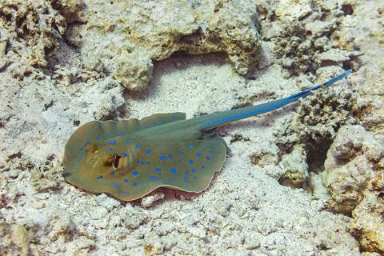
⚠ рваная рана, боль
Где: На песчаном мелководье залива
Как избежать: На мелководье шаркать ногами, а не шагать
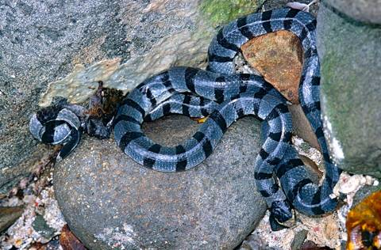
⚠ яд сильный, но кусают крайне редко
Где: Водятся в заливе, кусают в основном рыбаков
Как избежать: Не трогать змей в воде и на берегу
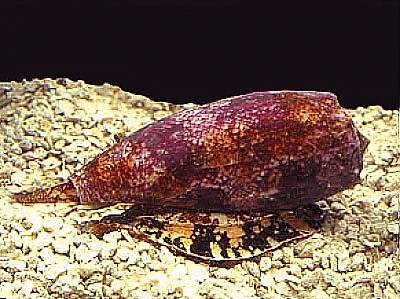
⚠ смертельно опасны
Где: Встречаются в тайских водах, случаев у Паттайи не найдено
Как избежать: Ребёнку не давать поднимать живые ракушки
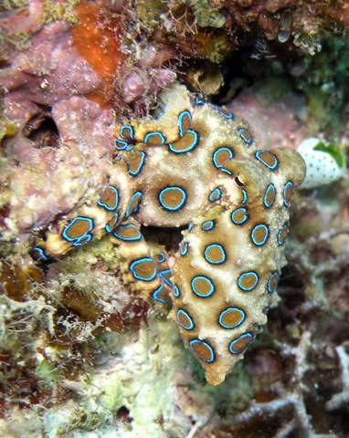
⚠ смертельно опасен
Где: Редкость; прячется в лужах при отливе
Как избежать: Не трогать «осьминожков» в лужах и камнях
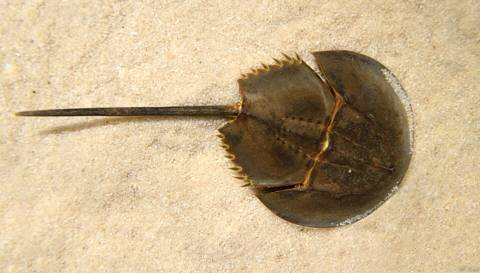
⚠ ядовит, если съесть
Где: Продают и готовят, особенно икру
Как избежать: Не заказывать мечехвоста и его икру (хой мэнг даа)
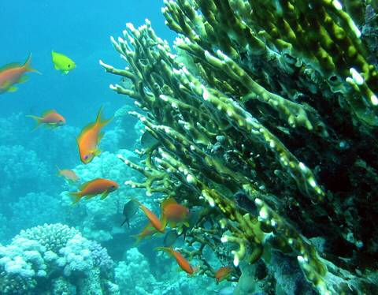
⚠ порезы легко воспаляются
Где: Рифы у Ко Лана
Как избежать: Обувь для воды; порез промыть и обработать антисептиком
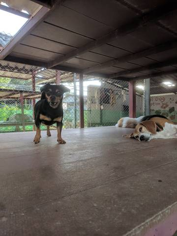
⚠ бешенство
Где: Много на пляжах Джомтьена и На Джомтьена, особенно ночью и рано утром. Чонбури — «красная зона» по бешенству
Как избежать: Не гладить чужих животных, держать ребёнка рядом. Любой укус или царапина — в тот же день в больницу за прививкой
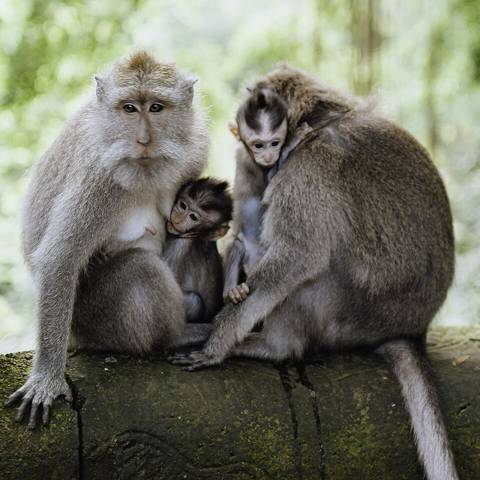
⚠ кусаются, воруют еду; бешенство
Где: Ко Лан (пляжи Тавэн и Нуан), Пратамнак, иногда Джомтьен
Как избежать: Не кормить, еду и пакеты не держать на виду, ребёнка — на руках, в глаза не смотреть
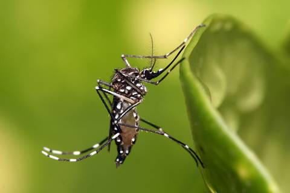
⚠ денге
Где: Конец октября — риск ещё заметный; кусают днём, особенно утром и к вечеру
Как избежать: Репеллент: взрослым — DEET 20–30% или пикаридин (икаридин); Нине — пикаридин или DEET не больше 10–20% по инструкции, на одежду и открытую кожу, не на руки и лицо. Цитронелла, браслеты и пластыри почти не защищают. Плюс светлая одежда с рукавами, сетка на кроватку и коляску
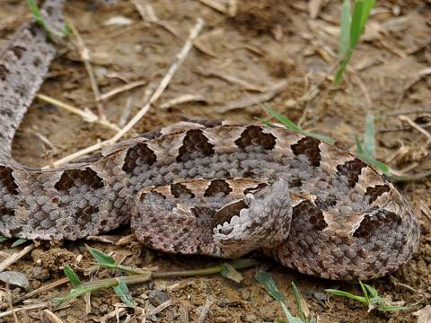
⚠ опасный яд
Где: Лежит в листве и на земле — главный виновник укусов на востоке Таиланда
Как избежать: Вечером — по освещённым дорожкам с фонариком, закрытая обувь
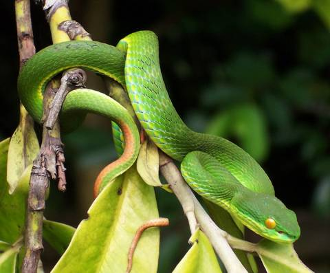
⚠ болезненный укус
Где: На кустах и ветках — на уровне рук ребёнка, в садах
Как избежать: Не пускать ребёнка в кусты; не трогать «зелёную змейку»
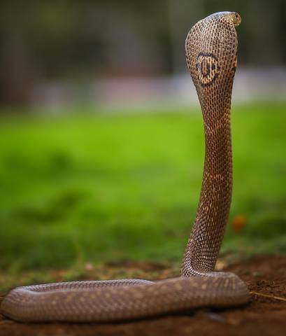
⚠ опасный яд
Где: Сады, поля, иногда дома после дождей
Как избежать: Змею не ловить — звонить 1337 или пожарным Джомтьена
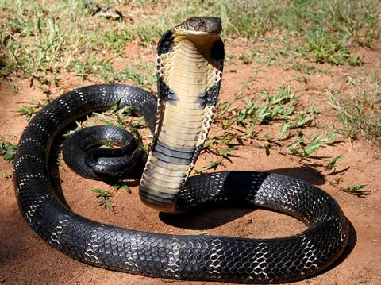
⚠ опасный яд
Где: Редко (в Паттайе находили в садовом пруду)
Как избежать: Держаться подальше, звонить 1337
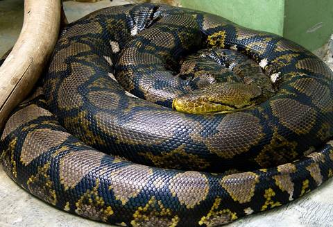
⚠ для Нины теоретически опасен
Где: Неядовит, но регулярно появляется в кондо Паттайи и Джомтьена
Как избежать: Не подходить, звонить 1337
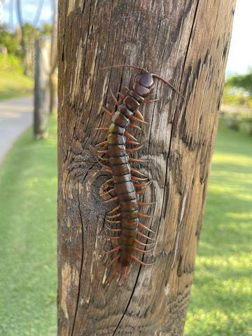
⚠ очень болезненный укус
Где: После дождей заползают в обувь и бельё
Как избежать: Перед тем как надеть, вытряхивать обувь и одежду
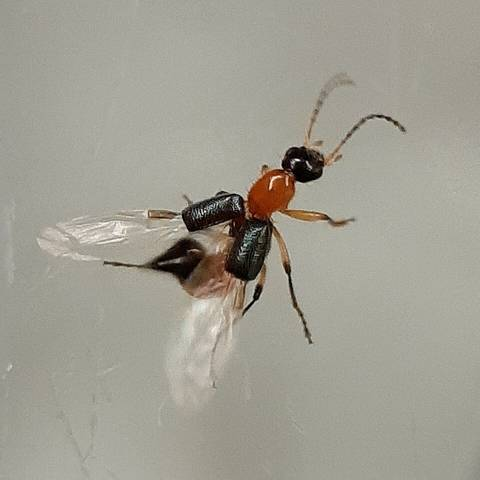
⚠ пузырчатый ожог, если раздавить на коже
Где: В сезон дождей летит на свет
Как избежать: Не прихлопывать, а сдуть; кожу промыть с мылом
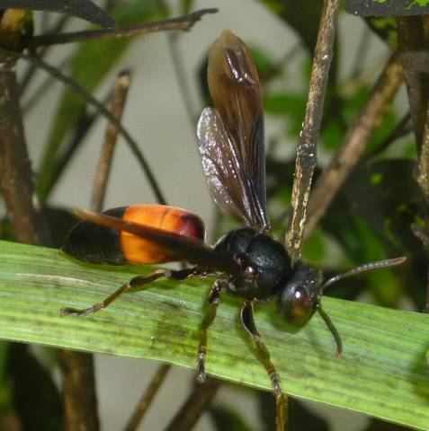
⚠ опасны при аллергии
Где: Сады и газоны
Как избежать: Осторожно в саду; отёк лица или трудно дышать — 1669
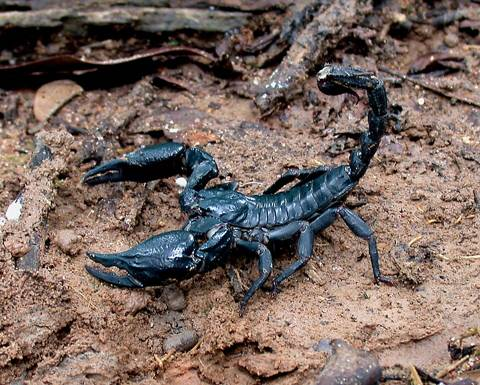
⚠ болезненно
Где: В курортной зоне редки
Как избежать: Не оставлять вещи на полу в саду
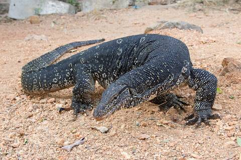
✅ безопасно
Живут у каналов, прудов, в парках. Выглядят как маленькие крокодилы, но пугливые — не загоняйте в угол и не трогайте.
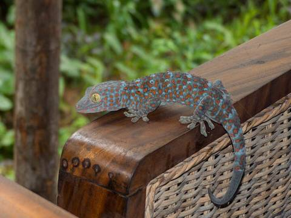
✅ безопасно
Громко кричит «то-кей» по ночам. Безвреден, если не хватать руками. Маленькие гекконы на стенах полезны — едят комаров.
Ещё безвредны: огромные пауки-кругопряды, тараканы, ночные бабочки, жуки-носороги, крабы-призраки на ночном пляже. Летучих мышей — не трогать (бешенство).
Росгосстрах «Поехали!» — на всех пятерых, включая Нину. Лечение до 50 000 $ на каждого, доплачивать ничего не нужно.
Не покрывает: мопеды, скутеры, гидроциклы, дайвинг; солнечные ожоги и сыпь; хронические болезни без угрозы жизни (родителям взять свои лекарства с запасом); багаж и задержки рейсов.
📞 Позвонить в страховуюДетскую часть лучше заранее показать педиатру: дозировки зависят от веса ребёнка. Лекарства везти в оригинальных упаковках с инструкциями, на рецептурные взять рецепт или выписку.
Не брать: препараты с кодеином, трамадолом, псевдоэфедрином (некоторые средства от простуды) и сильные снотворные. В Таиланде и Китае они под контролем, вплоть до уголовной ответственности.
В Паттайе много аптек (Boots, Watsons и местные), там продаётся почти всё. Не хватит чего-то, докупим там.
загружаю курс…